JavaFX + Metal Native Overlay: Technical Documentation
Overview
The prototype draws GPU-rendered Metal content over part of a JavaFX window. It does this by placing a borderless, transparent, click-through native child window over the right pane and driving it from Java through the Foreign Function & Memory (FFM) API. No JNI, SwingNode or JavaFX internals are involved in rendering. The only internal API used is a reflection call that fetches the NSWindow handle.
| Component | Language | Role |
|---|---|---|
NativeMetalApp.java | Java 25+, JavaFX 26 | UI, frame loop, layout sync, and the private MetalRenderer FFM facade |
Renderer.swift | Swift 6.3+ | Metal device, pipelines, child window, C ABI exported with @c |
librenderer.dylib | built artifact | Shared library loaded by SymbolLookup.libraryLookup |
build_lib.sh | sh | Compiles the Swift file with swiftc -emit-library |
renderer.m | Objective-C | Original implementation, kept for comparison, not built |
Target platform: macOS on Apple Silicon (arm64, macOS 14+). The app runs as a single-file jbang script.
Architecture

Control flows down: JavaFX events reach the private MetalRenderer, which makes FFM downcalls into the Swift dylib. The dylib hops to the main thread and drives a child window stacked above the Glass window. Pixels never flow back into JavaFX. The two windows are composited by the macOS window server.
Java side: NativeMetalApp and MetalRenderer
All native access lives in one private nested class, NativeMetalApp.MetalRenderer, so the UI code never touches MethodHandle, MemorySegment or Throwable.
Application lifecycle
init()builds aMetalRendererfrom./librenderer.dylib(resolved against the working directory). The constructor opens the library withSymbolLookup.libraryLookup(path, Arena.global())and binds the 7 downcall handles. A missing symbol fails startup withNative symbol not found: <name>.start()builds the UI, shows the stage, then inPlatform.runLaterreads the Glass NSWindow pointer and callsrenderer.attach(handle).- An
AnimationTimerruns on every JavaFX pulse: it syncs the pane bounds and renders one frame. stage.setOnHidingcallsdestroyRenderer()(stop the timer, thenrenderer.close()).stop()calls it again, which is harmless becauseclose()is idempotent.
MetalRenderer contract
- It holds the opaque renderer pointer in
ctx, andisAttached()meansctx.address() != 0. - Every method other than
attachdoes nothing until attach succeeds and again afterclose(). This protects Swift from slider or combo events that arrive before the overlay exists. - Native errors are caught inside the class and printed. They never reach JavaFX handlers.
- Calls use
invokeExactwith exact static types, so the JIT can inline the downcalls. Nothing is boxed on the per-frame path.
Bindings
| Java method | C symbol | Signature (C view) | Called from |
|---|---|---|---|
attach(long) | init_metal_renderer | void* (void* nsWindow) | Platform.runLater after show |
updateBounds(x, y, w, h, clip) | update_renderer_bounds | void (void*, double×4, int32) | Every pulse, clip checkbox |
renderFrame() | render_frame | void (void*) | Every pulse |
setAlpha(float) | set_renderer_alpha | void (void*, float) | Opacity slider |
setRenderMode(int) | set_render_mode | void (void*, int32) | 2D/3D combo |
rotate(dx, dy) | update_rotation | void (void*, float, float) | Mouse drag on right pane |
close() | destroy_metal_renderer | void (void*) | Stage hiding, stop() |
Getting the NSWindow: getGlassWindowHandle() uses reflection on com.sun.glass.ui.Window.getWindows() and calls getNativeWindow() on the first entry. That is why the script needs --add-opens javafx.graphics/com.sun.glass.ui=ALL-UNNAMED.
Native side: Renderer.swift
The dylib exports 7 C functions with Swift 6.3's @c(name) attribute. Each one hops to the AppKit main thread and forwards the call to a @MainActor Swift class, also named MetalRenderer.
Pointer ownership
init_metal_rendererwraps the incoming NSWindow pointer withUnmanaged.takeUnretainedValue()(Glass owns it). It returnsUnmanaged.passRetained(renderer).toOpaque(), so the Java side holds +1 on the renderer.- The other calls use
takeUnretainedValue().destroy_metal_renderercallstearDown()and thenrelease(), which drops that +1. - A null pointer is ignored by every export (
guard let rendererPtr else { return }). If init fails it logs throughNSLogand returns null.
Threading
onMain { } runs the body inline when the caller is already on the main thread, and otherwise uses DispatchQueue.main.sync. On macOS the JavaFX Application Thread is the AppKit main thread, so in practice every call takes the inline path. Pointers cross the hop as Int bit patterns so the closures stay Sendable under Swift 6 strict concurrency.
What init builds
MTLCreateSystemDefaultDevice()plus a command queue.- A shader library compiled at runtime from the embedded MSL source string:
vertexShader2D,vertexShader3Dand a sharedfragmentShaderthat passes vertex colour through. - Two pipeline states, both
bgra8Unorm. The 2D one has no vertex buffer (the 3 vertices are hard-coded in the shader). The 3D one uses a vertex descriptor matchingVertex3D(float3 position plus float4 colour, stride 32). - A shared-storage vertex buffer of 24 vertices: a triangular prism (2 end caps, 3 quad sides).
- A borderless
NSWindowwith a clear background andignoresMouseEvents = true, whose content view is backed by a non-opaqueCAMetalLayer. It is added withparentWindow.addChildWindow(child, ordered: .above), so it moves with the JavaFX window.
Bounds and clipping (updateBounds)
It converts JavaFX scene coordinates (top-left origin) to Cocoa screen coordinates (bottom-left origin) using the parent's content rect: cocoaY = parent.y + parent.height - (y + h). Then it sets the child window frame and the layer frame.
| clipMode | Effect |
|---|---|
| 0 (default) | cornerRadius = 12 on the top-right corner only (layerMaxXMinYCorner), masksToBounds |
| 1 | New CAShapeLayer ellipse mask fitted to the layer bounds |
Per-frame render (renderFrame, inside autoreleasepool)
- Get
nextDrawable()and a command buffer. - Advance
animationPhaseby 0.02 and clear to a pulsing dark purple whose alpha isglobalAlpha(the opacity slider, default 0.4). - In mode 0, draw the 2D triangle. In mode 1, build MVP = perspective(60°, aspect, 0.1, 10) × view(z = -2) × rotation(rx, ry), pass it with
setVertexBytesat index 1, and draw 24 vertices. - Present and commit. Nothing waits for the GPU.
Drag rotation accumulates rotationY += dx × 0.01 and rotationX += dy × 0.01 radians per pixel.
Runtime flows

All four flows run on a single thread. On macOS the JavaFX Application Thread is the AppKit main thread, so each onMain hop runs inline. Input calls only change Swift state (globalAlpha, renderMode, rotationX/Y), and the next pulse picks it up.
Why teardown runs on hiding. The child window is attached to the Glass NSWindow. If the renderer were destroyed in Application.stop(), Glass would already have released its window, and removeChildWindow would touch freed memory. That was the crash at exit fixed in commit cb3c636. Destroying the renderer in setOnHiding runs while the parent still exists, and the later stop() call finds ctx already null and does nothing.
Build and run
You need Xcode Command Line Tools with Swift 6.3+, JDK 25+ and jbang. Then build the library and run the script from the project root:
./build_lib.sh # swiftc -emit-library -O -swift-version 6 -target arm64-apple-macos14.0
jbang NativeMetalApp.java # or ./NativeMetalApp.java via the shebangThe jbang header carries everything the JVM needs:
| Directive | Why |
|---|---|
//DEPS org.openjfx:javafx-controls:26.0.1:mac-aarch64 | JavaFX 26 with the macOS arm64 natives |
--enable-native-access=ALL-UNNAMED,javafx.graphics | Allows FFM downcalls without warnings or errors |
--add-opens javafx.graphics/com.sun.glass.ui=ALL-UNNAMED | Reflection access to Window.getNativeWindow() |
The Swift runtime ships with macOS (/usr/lib/swift), so the dylib loads like any C library. Run nm -gU librenderer.dylib to check that all 7 symbols are exported.
Troubleshooting
Native symbol not found: <name>: the dylib is stale or was built from other sources. Rerunbuild_lib.sh.- Library not found: the path is resolved against the working directory, so run from the project root.
- Status stays "Unbound": either the Glass handle lookup failed (look for
Could not resolve native Glass handleon stderr) or Metal init failed (look for theNSLogline in Console.app or stderr).
Enhancement opportunities
The highest-value fixes are Retina sharpness, change-only bounds sync and a depth buffer for 3D. Each is a small, local change. The list is ordered by value to the demo, and effort is a rough estimate (S under 1 hour, M a few hours, L a day or more).
| # | Enhancement | Why it matters | Where | Effort |
|---|---|---|---|---|
| 1 | Set metalLayer.contentsScale = parentWindow.backingScaleFactor (and refresh it on screen change) | contentsScale defaults to 1, so on a Retina display the drawable renders at half resolution and looks soft | Swift init, updateBounds | S |
| 2 | Sync bounds only when they change | Each pulse calls setFrame(display: true), and in clip mode 1 it allocates a new CAShapeLayer per frame | Java syncNativeOverlayBounds (cache last values) or Swift updateBounds (early return) | S |
| 3 | Add a depth attachment and MTLDepthStencilState, or back-face culling | The prism has no depth test, so faces draw in submit order and the far side shows through while it rotates | Swift pipeline 3D, renderFrame | M |
| 4 | Time-based animation | animationPhase += 0.02 per frame runs twice as fast on a 120 Hz ProMotion display. Pass now from AnimationTimer or use CACurrentMediaTime() | Swift renderFrame | S |
| 5 | Keep frame pacing off the FX thread | nextDrawable() blocks when all drawables are in use (up to 1 s), freezing JavaFX. Options: CAMetalDisplayLink (macOS 14+) on the native side, or a render thread | Swift, Java timer | L |
| 6 | Match the Glass window to the stage | getWindows().get(0) picks the first Glass window, which is wrong once a dialog or second stage exists | Java getGlassWindowHandle | S |
| 7 | Report init failure to the UI | A failed attach only logs. Show a reason in statusText, for example by returning an error code or message from native | Java attach, Swift init | S |
| 8 | Precompile shaders to a .metallib | makeLibrary(source:) compiles MSL on every launch and hides shader errors until runtime | build_lib.sh, Swift init | M |
| 9 | Locate the dylib robustly | The path depends on the working directory. Use a system property with the script directory as fallback | Java init | S |
| 10 | One C header as the ABI source of truth | Java descriptors and Swift signatures are kept in sync by hand. A renderer.h checked by a test, or used with jextract, prevents drift (jextract would add generated files, so the single-file rule would need relaxing) | New renderer.h | M |
| 11 | Fix small UI issues | opacityLabel is never added to the pane, the "Interact" button does nothing, and the title still says "JavaFX 25" | Java start | S |
| 12 | Handle window state changes | Minimise, full screen and moving to another Space are untested for the child window | Swift, manual tests | M |
| 13 | Port to Windows and Linux | The README plan: same 7-function C ABI, one per-OS library (Direct3D, Vulkan), chosen at runtime by the Java side | New native libraries | L |
One side note on design: settings such as alpha, mode and rotation could live in a small shared MemorySegment struct that Swift reads each frame. That would replace four downcalls with plain memory writes. It only pays off if the calls show up in a profile.